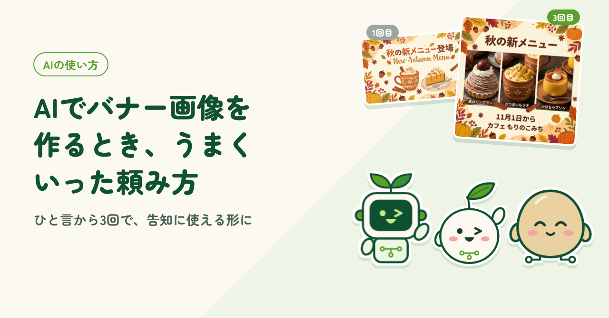
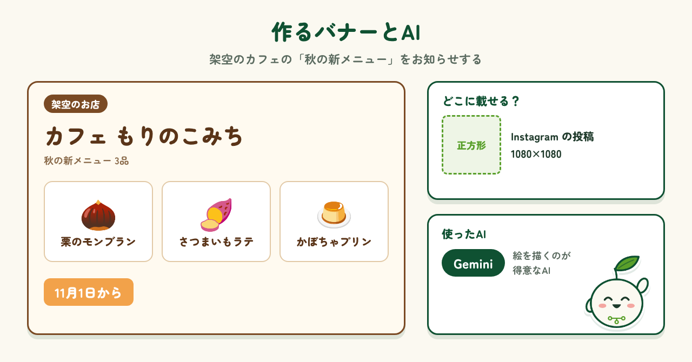
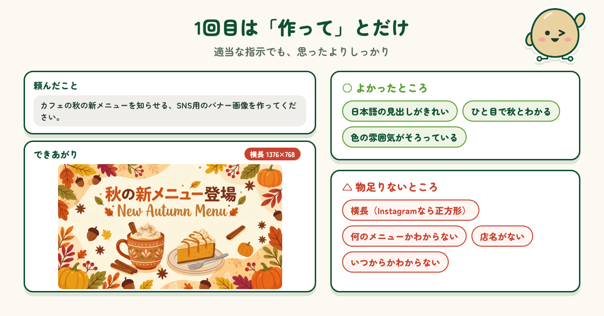
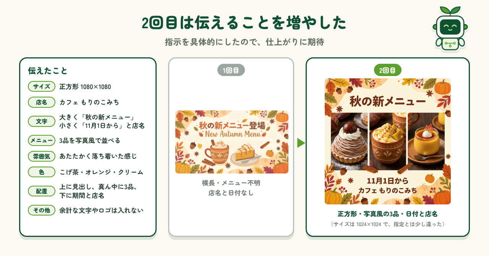
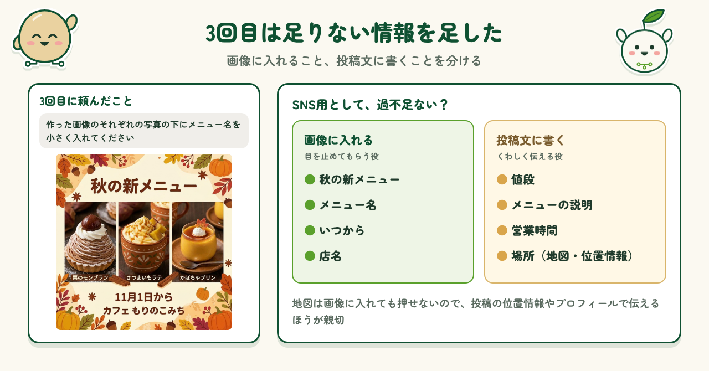

はじめに
お店の新メニューやセールを知らせるバナー、SNSに載せる告知画像。依頼サイトでも、こうした画像づくりの仕事をよく見かけます。デザインの経験がなくても、AIに頼めば作れるのでしょうか。今回は、AIに告知用のバナーを作ってもらい、頼み方を変えるとどう変わるのかを試してみました。最初はひと言だけ、そこから少しずつ伝えることを増やしていきます。
作るバナーとAI
お題は、架空のカフェ「カフェ もりのこみち」の秋の新メニューのお知らせです。新メニューは、栗のモンブラン、さつまいもラテ、かぼちゃプリンの3品。11月1日から始まる、という設定にしました。載せる場所はInstagramの投稿を想定し、形は正方形です。使ったAIは、絵を描くのが得意なGeminiです。

1回目は「作って」とだけ
まずは「カフェの秋の新メニューを知らせる、SNS用のバナー画像を作ってください」とだけ頼みました。適当な指示だったので期待していませんでしたが、思ったよりしっかりしたものができあがりました。「秋の新メニュー登場」という日本語の見出しもきれいで、落ち葉やかぼちゃで、ひと目で秋とわかります。ただ、形は横長で、Instagramの正方形には合いません。ラテとケーキの絵も、何のメニューかはわからず、店名やいつからかも入っていませんでした。

2回目は伝えることを増やした
2回目は、伝えることをぐっと増やしました。正方形のサイズ、店名、入れる文字、メニュー3品、雰囲気、色、配置、そして「余計な文字やロゴは入れない」。1回目より指示を具体的にしたので、仕上がりに期待していました。できあがったのは、正方形の画像に、写真のようなモンブラン・ラテ・プリンが3つ並んだバナーです。上に「秋の新メニュー」、下に「11月1日から」と店名が、くずれずに読めます。頼んだことが、ほぼそのまま形になっていました。

3回目は足りない情報を足した
ただ、2回目の画像を見て、気になることもありました。メニュー名や値段がなく、お店の情報も店名だけで、地図も入っていません。SNS用として過不足がないのか、心配になりました。調べてみると、Instagramの画像は目を止めてもらう役で、値段や場所などのくわしい情報は投稿文に書くのが一般的です。地図は画像に入れても押せません。そこで3回目は、メニュー名だけを足してもらいました。写真の下に3品の名前が入り、ほかの部分はそのまま残っていました。

まとめ
ひと言だけの頼み方でも、AIは見た目のよいバナーを作ってくれました。ただ、告知として使うには、サイズや店名、日付、メニューを伝える必要があります。伝えることを増やすほど、頼んだとおりの形に近づきました。そして、画像に何を入れ、何を投稿文に書くかを決めるのは人の仕事です。足りないところは、あとから一つずつ直してもらえば大丈夫。AIと少しずつ仕上げていくのが、うまくいく頼み方だと感じました。
制作メモ
段落の構成と文章の下書きはAI（Claude）と作り、各段落に自分の感想を入れて、1段落ずつ確認・修正しました。図もAIと一緒に作っています。